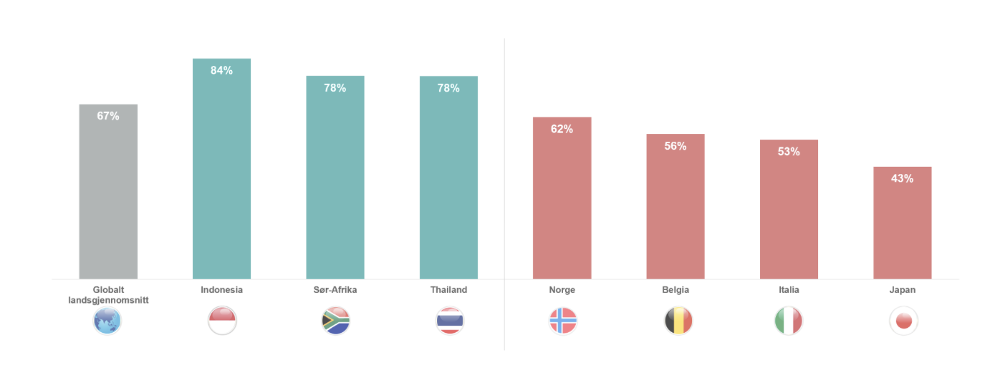
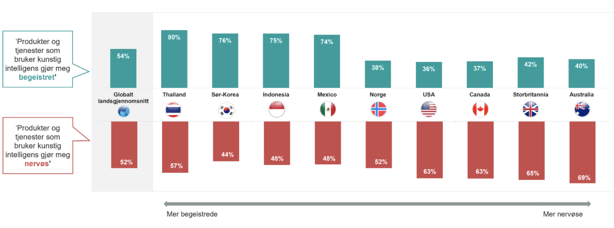
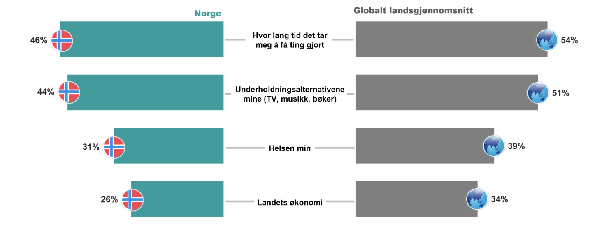

Siden lanseringen av ChatGPT mot slutten av 2022 har oppmerksomheten og bevisstheten rundt kunstig intelligens (KI) økt betraktelig. Gjennombruddet for denne tekstbaserte modellen skaper forventninger om at bruken av KI gradvis vil få større betydning i livene våre, enten det er på jobb eller i dagliglivet. Etter hvert som teknologien forbedres er det sannsynlig at KI vil spille en rolle i sentrale sektorer som undervisning, helse og transport, og også i analysebransjen.
Ipsos Globalt gjennomførte en undersøkelse i 31 land for å forstå oppfatningene og forventningene til KI blant mennesker over hele verden, og Ipsos i Norge stilte de samme spørsmålene til et representativt utvalg av den norske befolkningen. Funnene viser at det er både begeistring og bekymring knyttet til KIs mulige innvirkning på ulike samfunnsområder.
Nesten 2 av 3 nordmenn mener de har en god forståelse av hva kunstig intelligens er
62 prosent av den norske befolkningen mener de har en god forståelse av hva kunstig intelligens er, og troen på egen forståelse er noe høyere blant menn, og blant personer under 40 år. Nordmenn er imidlertid mer moderate i hvordan vi vurderer vår forståelse av KI enn det globale landsgjennomsnittet på 67 prosent.
Forståelse av kunstig intelligens
Spørsmål: Hvor enig eller uenig er du i følgende utsagn: "Jeg har god forståelse fpr hva kunstig intelligens er" (Helt / litt enig %)
Det er stort spenn i hvordan mennesker i ulike land vurderer egen forståelse av KI. I Indonesia, Sør-Afrika og Thailand mener over tre fjerdedeler av befolkningen at de har en god forståelse av hva KI er, mens Japan skiller seg ut på den andre enden av skalaen; kun 43 prosent av japanere vurderer sin forståelse som god. Det må nevnes at dette er en subjektiv vurdering, og vi skal være forsiktige med å konkludere med at forståelsen av KI spriker like mye mellom ulike land som dataene antyder. KI er et felt i rask utvikling, og kjennskap til kompleksiteten i kunstig intelligens kan nok også resultere i måteholdenhet i vurderingen av egen forståelse.
Over halvparten av nordmenn blir nervøse av produkter og tjenester som bruker KI
Det er knyttet høye forventninger til at KI kan bidra positivt i samfunnet, men det blir også stilt spørsmål om teknologien kan ha negative konsekvenser som er vanskelig å forutsi. I studien ble respondentene spurt om de føler begeistring eller nervøsitet når flere produkter og tjenester benytter KI, og resultatene viser at meningene er delte og varierer mye mellom ulike land. Det bør nevnes at uttrykk for begeistring og nervøsitet ikke nødvendigvis er gjensidig utelukkende, og studien åpner for at en enkelrespondent kan oppleve begge deler.
Det globale landsgjennomsnittet gir ikke noe entydig svar på hvordan folk opplever KIs inntreden - omtrent halvparten uttrykker begeistring over KIs inntog, og en tilsvarende andel svarer at produkter og tjenester som benytter KI gjør dem nervøse. Reaksjonene varierer imidlertid stort mellom land i ulike regioner. I Asia blir KI i hovedsak sett på som noe positivt – over tre fjerdedeler av befolkningen i Thailand, Sør-Korea og Indonesia blir begeistret over produkter og tjenester som benytter KI. I Vesten er folk mer skeptiske - i både Australia, Storbritannia, Canada og USA svarer omkring to tredjedeler at de blir nervøse av utviklingen.
Dette indikerer at graden av åpenhet til KI-baserte produkter og tjenester er kulturelt betinget. I Asia fokuseres det mest på hvordan ny teknologi, herunder KI, kan bidra til økonomisk vekst og utvikling av produkter og tjenester som gjør livet enklere for folk, mens folk vestlige land i større grad problematiserer de potensielt negative ringvirkningene som kan oppstå tilknyttet personvern, opphavsrett og konsentrasjon av makt og innflytelse under et knippe teknologigiganter.
Kunstig intelligens - kilde til begeistring eller nervøsitet
Spørsmål: Hvor enig eller uenig er du i følgende utsagn? (Helt / litt enig %)
Norge tilhører sistnevnte kategori, men nordmenn er likevel mindre skeptiske til produkter og tjenester basert på KI enn i de engelsktalende landene. Studien gir ikke svar på hvorfor dette er tilfelle, men en grunn kan være at i et land med høy tillit har befolkningen også i større grad tillit til at myndigheter og kommersielle aktører sørger for at nødvendige retningslinjer er på plass.
52 prosent av nordmenn svarer at KI-baserte produkter og tjenester gjør dem nervøse, mens 38 prosent uttrykker begeistring, og det er i hovedsak når det gjelder begeistring at vi ser betydelige variasjoner mellom ulike undergrupper i befolkningen. 44 prosent av menn uttrykker begeistring for KI-baserte produkter og tjenester, sammenlignet med 32 prosent blant kvinner. Forskjellene er enda større hvis vi bryter resultatene ned på alder; 52 prosent av de i aldersgruppen 18-29 år uttrykker begeistring, mot kun 23 prosent blant de over 60 år.
De delte meningene indikerer at organisasjoner som tar i bruk KI må være varsomme med hvordan dette posisjoneres til forbrukere – selv om KI kan forbedre bruksnytten av produkter og tjenester, kan det også oppleves som noe fremmed og som en kilde til usikkerhet. Adapsjon av KI bør derfor kommuniseres på en måte som fremmer trygghet, særlig inn mot målgrupper der begeistring for teknologien er begrenset.
Få nordmenn er bekymret for at KI vil erstatte jobben deres
Et av temaene som diskuteres i forbindelse med KIs inntreden er hvordan det vil påvirke arbeidslivet, særlig med tanke på at automatisering av oppgaver som nå utføres av mennesker i ytterste instans kan føre til at arbeidstakere i enkelte bransjer blir helt eller delvis erstattet. I studien ble respondentene spurt om i hvilken grad de tror KI vil påvirke deres nåværende jobb, og hvorvidt de ser det som sannsynlig at innføringen av KI vil gjøre dem overflødig.
Nordmenn er langt mindre tilbøyelig til å tro at KI vil påvirke jobben deres fem år fram i tid sammenlignet med de fleste andre land - 37 prosent av befolkningen svarer at dette er sannsynlig, mot 57 prosent globalt. Av de 31 landene som deltok i den globale undersøkelsen er det kun i Tyskland og Sverige at andelen er lavere enn den er i Norge. Dette gjenspeiles også i at frykten for at jobben vil bli erstattet av KI er lavere i Norge enn i noe annet land som var del av studien, kun 15 prosent av nordmenn ser dette som sannsynlig. Kontrasten er størst til sørøstasiatiske land som Thailand, Indonesia og Malaysia, der over tre fjerdedeler tror at KI vil ha en innvirkning på jobben deres, og en majoritet(!) ser det som sannsynlig at jobben deres vil bli erstattet av KI i løpet av de neste fem årene.
En nøktern holdning til KIs inntreden i arbeidslivet kan vise seg å være positivt på flere måter. På den ene siden kan en viss skepsis til KIs transformative kraft forhindre at vi forventer mer av KI-baserte tjenester enn det som kan rettferdiggjøres. På den annen side kan vi benytte teknologien på felter der den kan fungere som et produktivt supplement, uten at det nødvendigvis blir sett på som en uforholdsmessig stor trussel mot arbeidsplasser.
Hvordan kunstig intelligens forventes å påvirke arbeidslivet
Spørsmål: 'Hvor sannsynlig tror du det er, om i det hele tatt, at kunstig intelligens vil erstatte din nåværende jobb i løpet av de neste fem årene?' (Veldig / ganske sannsynlig %)
Spørsmål: 'Hvor sannsynlig tror du det er, om i det hele tatt, at kunstig intelligens vil påvirke hvordan du gjør din nåværende jobb de neste fem årene?' (Veldig / ganske sannsynlig %)
Også når det gjelder KIs påvirkning i arbeidslivet er det klare demografiske forskjeller. 47 prosent av de spurte under 40 år tror jobben deres vil bli påvirket av KI, sammenlignet med 23 prosent blant de over 60 år. Noe av forskjellen kan nok forklares med arbeidstakeres egne valg – særlig i yrker der innhenting og formidling av informasjon står sentralt er det nå lett å anvende tekstbaserte KI-tjenester som ChatGPT, og det er mulig at veien til å benytte det er kortere for yngre arbeidstakere som i større grad har vokst opp med digitale tjenester. Troen på KIs transformative egenskaper kan også forklare hvorfor fem ganger så stor andel av de under 40 år tror det er sannsynlig at jobben deres vil bli erstattet av KI innen fem år (26 prosent) enn de som er over 60 år (5 prosent).
Ettersom gjennombruddet innen KI vi nå opplever fokuserer på tekst- og informasjonsbehandling er det nærliggende å tro at endringene det vil medføre vil ha størst innvirkning på informasjonssektoren, der vi gjerne finner arbeidstakere med høyere utdanning. Dette finner vi også grunnlag for i dataene, da 45 prosent av nordmenn med universitetsutdanning tror KI vil påvirke jobben deres de neste fem årene, sammenlignet med 25 prosent blant de med videregående skole eller lavere. Likevel føler ikke de høyt utdannede at jobben deres er mer utsatt – kun 16 prosent av de universitetsutdannede tror jobben deres vil bli erstattet, som ikke skiller seg i noen betydelig grad fra befolkningen generelt. Dette indikerer at de som i størst grad benytter KI-baserte tjenester i jobben ser det som et supplement til menneskelig arbeidskraft, uten at det fører til en frykt for at arbeidstakeren selv vil bli overflødig.
Nordmenn har tro på at KI vil påvirke dagliglivet, men ikke helse og landets økonomi
Selv om mye av fokuset i media rettes mot hvordan KI vil påvirke arbeidslivet, vil det også kunne føre til endringer i dagliglivet for øvrig. For å kartlegge forventninger som går utover jobb, ble respondentene ble også spurt hvorvidt introduksjonen av KI vil ha en positiv effekt for egen helse, landets økonomi, underholdningstilbud, og evne til å få ting gjort.
Hvordan kunstig intelligens forventes å påvirke dagliglivet
Spørsmål: Trod du den økte bruken av kunstig intelligens vil gjøre følgende bedre, verre eller det samme i løpet av de neste tre til fem årene? (% Mye / noe bedre)
Som vi har sett er nordmenn mindre begeistret for KIs fremtreden enn det globale landsgjennomsnittet, og dette reflekteres også i hvordan vi vurderer effekten av KI på ulike samfunnsområder. Selv om nesten halvparten tror KI vil gjøre det enklere å få ting gjort og føre til bedre underholdningsalternativer, er andelen under det globale snittet. Nordmenn er også mer skeptiske til hvorvidt KI vil ha en positiv effekt på deres egen helse og på landets økonomi.
Når det gjelder troen på at KI vil ha en positiv innvirkning på helse og økonomi finner vi også de største forskjellene mellom ulike grupper i befolkningen. Andelen menn (35 prosent) som tror KI vil ha en positiv innvirkning på økonomien er dobbelt så stor som andelen blant kvinner (17 prosent). Optimisme har også en sterk sammenheng med alder, der de yngste i større grad tror det vil gjøre ting bedre. 46 prosent i aldersgruppen 18-29 år tror KI vil ha en positiv effekt på økonomien, mot kun 17 prosent blant de over 60 år. Også på helsefeltet er dette gjeldende, da 47 prosent av de i 18-29 år tror KI vil spille en positiv rolle, mens andelen kun er 25 prosent blant de over 50 år.
Både i Norge og globalt er det dominerende synet at de positive effektene av KI først vil føles i det mer trivielle, snarere enn på kritiske samfunnsområder som helse og økonomi. Ettersom teknologien utvikler seg, kan dette imidlertid endre seg raskt. Det er derfor viktig at bedrifter og organisasjoner som lanserer KI-baserte produkter og tjenester tar hensyn til de forbehold folk måtte ha, er klar over at ulike målgrupper kan reagere svært ulikt på KI-baserte løsninger, og kommuniserer ny innovasjon på feltet på en måte som gir grobunn for begeistring snarere enn bekymring.
1. Det globale landsgjennomsnittet (The 'Global Country Average') reflekterer gjennomsnittlig resultat for alle landene hvor undersøkelsen ble gjennomført at Ipsos Global Advisor teamet. Resultatene har ikke blitt justert opp mot befolkningsstørrelse og er derfor ikke representative for hele befolkningen i de ulike landene.Om undersøkelsen
Artikkelen baserer seg på en global studie Ipsos har gjennomført i 31 land. Ipsos i Norge har stilt de samme spørsmålene til et representativt utvalg av den norske befolkningen.
Ipsos Norge har stilt spørsmål på sin webomnibus i uke 27 i 2023, til et representativt utvalg av befolkningen på 560 respondenter (18 år +).
Den globale studien er gjennomført via Global Advisor webomnibus i perioden 26. mai til 9. juni 2023. Det er innhentet svar fra totalt 22,816 personer i alderen 16-74 år i 31 land.